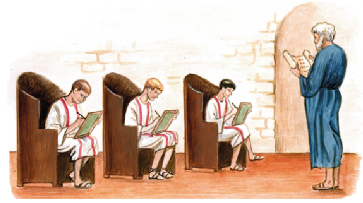
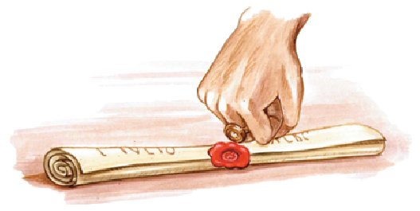

LITTERAE LATÍNAE
I
Discipulī nōn modo numerōs, sed etiam litterās discunt. Parvī discipulī, ut Mārcus et Titus et Sextus, litterās Latīnās discunt. Magnī discipulī litterās Graecās et linguam Graecam discunt. Lingua Graeca difficilis est.
Ecce omnēs litterae Latīnae, quārum numerus est vīgintī trēs, ab A ūsque ad Z: A, B, C, D, E, F, G, H, I, K, L, M, N, O, P, Q, R, S, T, V, X, Y, Z. Litterae sunt aut vōcālēs aut cōnsonantēs: vōcālēs sunt A, E, I, O, V, Y; cēterae sunt cōnsonantēs. (Etiam I et V cōnsonantēs sunt in vocābulīs IAM, VEL, VOS, QVAM, cēt.)
Litterae Y et Z in vocābulīs Graecīs modo reperiuntur (ut in hōc vocābulō zephyrus, id est nōmen ventī quī ab occidente flat). Y et Z igitur litterae rārae sunt in linguā Latīnā, in linguā Graecā frequentēs. K littera, quae frequēns est in linguā Graecā, littera Latīna rārissima est, nam K in ūnō vocābulō Latīnō tantum reperītur, id est kalendae (itemque in praenōmine Kaesō, quod praenōmen Rōmānōrum rārissimum est).
Hoc vocābulum amīca quīnque litterās habet et trēs syllabās: a-mī-ca. Quaeque syllaba vōcālem habet, ergō numerus syllabārum et vōcālium īdem est. In prīmā et in postrēmā syllabā huius vocābulī eadem vōcālis est: a. Vōcālis est littera quae per sē syllabam facere potest, ut a syllabam prīmam facit in vocābulō amīca. Sine vōcālī syllaba fierī nōn potest. Cōnsonāns per sē syllabam nōn facit, sed semper cum vōcālī in eādem syllabā iungitur. In exemplō nostrō m cum ī iungitur in syllabā secundā mī, et c cum a in syllabā tertiā ca.
Cum syllabae iunguntur, vocābula fīunt. Cum vocābula coniunguntur, sententiae fīunt. Ecce duae sententiae: Lingua in ōre inest et Lingua Latīna difficilis est. Vocābulum prīmum utrīusque sententiae idem est, sed hoc idem vocābulum duās rēs variās significat. Item varia vocābula eandem rem vel eundem hominem significāre possunt, ut ōstium et iānua, dominus et erus (sed erus est vocābulum multō rārius quam dominus).
Quī litterās nescit legere nōn potest. Magister, quī puerōs legere docet, ipse et librōs Latīnōs et Graecōs legere potest, nam is utramque linguam scit. Quōmodo parvus discipulus hanc sententiam legit: Mīles Rōmānus fortiter pugnat? Discipulus quamque litteram cuiusque vocābulī sīc legit: “M-I mī, L-E-S les: mī-les; R-O Rō, M-A mā, Rō-mā-, N-V-S nus: Rō-mā-nus...” Ita quodque vocābulum cuiusque sententiae ā discipulō legitur. (In hāc sententiā vocābulum fortiter novum est, sed quī vocābulum fortis scit, hoc vocābulum quoque intellegit, nam mīles fortis est mīles quī fortiter pugnat.)
In lūdō puerī nōn modo legere, sed etiam scrībere discunt. Quisque discipulus in tabulā suā scrībit eās sententiās quās magister eī dictat. Ita puerī scrībere discunt.

Magister discipulīs imperat: “Prōmite rēgulās vestrās et līneās rēctās dūcite in tabulīs. Tum scrībite hanc sententiam: Homō oculōs et nāsum habet.”
Quisque puer stilum et rēgulam prōmit et dūcit līneam rēctam in tabulā suā, tum scrībere incipit. Discipulī eandem sententiam nōn eōdem modō, sed variīs modīs scrībunt. Sextus ūnus ex tribus puerīs rēctē scrībit: HOMO OCVLOS ET NASVM HABET. Titus sīc scrībit: HOMO HOCVLOS ET NASVM HABET. Mārcus vērō sīc: OMO OCLOS ET NASV ABET.
II
Magister: “Date mihi tabulās, puerī!”
Discipulī magistrō tabulās suās dant. Is tabulam cuiusque puerī in manūs sūmit litterāsque eōrum aspicit. Quālēs sunt litterae Sextī? Pulchrae sunt. Quālēs sunt litterae Mārcī et Titī? Litterae eōrum foedae sunt ac vix legī possunt. Magister suam cuique discipulō tabulam reddit: prīmum Sextō, tum Titō, postrēmō Mārcō, atque “Pulchrē et rēctē scrībis, Sexte,” inquit. “Facile est tālēs litterās legere. At litterae vestrae, Tite et Mārce, legī nōn possunt! Foedē scrībitis, pigrī discipulī!” Magister Titum et Mārcum sevērē reprehendit.
Titus: “Certē pulcherrimae sunt litterae Sextī, sed meae litterae pulchriōrēs sunt quam Mārcī.”
Magister: “Reddite mihi tabulās, Tite et Mārce!”
Titus et Mārcus tabulās suās reddunt magistrō, quī eās simul aspicit. Magister litterās Titī comparat cum litterīs Mārcī, et “Litterae vestrae,” inquit, “aequē foedae sunt: tū, Tite, neque pulchrius neque foedius scrībis quam Mārcus.”
Titus: “At certē rēctius scrībō quam Mārcus.”
Magister: “Facile est rēctius quam Mārcus scrībere, nēmō enim prāvius scrībit quam ille! Nōn oportet sē comparāre cum discipulō pigerrimō ac stultissimō! Comparā tē cum Sextō, quī rēctissimē et pulcherrimē scrībit.” Tum sē vertēns ad Mārcum: “Tū nōn modo foedissimē, sed etiam prāvissimē scrībis, Mārce! Nescīs Latīnē scrībere! Puer pigerrimus es atque stultissimus!” Iam Mārcus multō sevērius reprehenditur quam Titus.
Mārcus (parvā vōce ad Titum): “Magister dīcit ‘mē prāvē scrībere’: ergō litterās meās legere potest.”
At magister, quī verba Mārcī exaudit, “Litterās tuās turpēs” inquit “legere nōn possum, sed numerāre possum: quattuor litterās deesse cernō. Aspice: in vocābulō prīmō et in vocābulō postrēmō eadem littera H deest.”
Mārcus: “At semper dīcō ‘omō abet’.”
Magister: “Nōn semper idem dīcimus atque scrībimus. In vocābulō secundō V deest, in quārtō M. Quid significant haec vocābula turpia oclōs et nāsu? Tālia verba Latīna nōn sunt! Nūllum rēctum est vocābulum praeter ūnum et, atque id vocābulum est frequentissimum et facillimum! Quattuor menda in quīnque vocābulīs! Nēmō alter in tam brevī sententiā tot menda facit!”
Magister stilō suō addit litterās quae dēsunt; ita menda corrigit. Tum vērō “Nec sōlum,” inquit, “prāvē et turpiter, sed etiam nimis leviter scrībis. Hās līneās tenuēs vix cernere possum. Necesse est tē stilum gravius in cēram premere.” (Discipulī in cērā scrībunt, nam tabulae eōrum cērā operiuntur. Cēra est māteria mollis quam apēs, bēstiolae industriae, faciunt.)
Mārcus: “Stilum graviter premō, sed cēra nimis dūra est. Aliam tabulam dā mihi! Haec cēra prope tam dūra est quam ferrum.” (Ferrum est māteria dūra ex quā cultrī, gladiī, stilī aliaeque rēs multae efficiuntur.)
Magister Mārcō eandem tabulam reddit et “Cēra tua,” inquit, “tam mollis est quam Sextī, et facile est eius litterās legere. Sūme tabulam tuam et scrībe H litteram deciēs!”
III
Mārcus deciēs H scrībit: H H H H H H H H H H. Tum magister eum V sexiēs scrībere iubet, et Mārcus, quī eandem litteram totiēs scrībere nōn vult, V V V V scrībit. Quotiēs Mārcus V scrībit? Mārcus, ut piger discipulus, quater tantum V scrībit. Deinde magister eum tōtum vocābulum NASVM quīnquiēs scrībere iubet, et Mārcus scrībit NASVM NASVM NASVM NASV NASV. Mārcus ter rēctē et bis prāvē scrībit.
Tum Titus, quī duās litterās deesse videt, sīc incipit: “Magister! Mārcus bis...” — cum Mārcus stilum dūrum in partem corporis eius mollissimam premit! Titus tacet nec fīnem sententiae facere audet. Magister vērō hoc nōn animadvertit.
Magister: “Iam tōtam sententiam rēctē scrībe!”
Mārcus interrogat: “Quotiēs?”
Magister breviter respondet: “Semel.”
Mārcus tōtam sententiam iterum ab initiō scrībere incipit: HOMO HOCVLOS...
Magister: “Quid significat hoculōs? Illud vocābulum turpe nōn intellegō!”
Mārcus: “Num hīc quoque littera deest?”
Magister: “Immō vērō nōn deest, at superest H littera! Num tū hoculōs dīcis?”
Mārcus, ut puer improbus, magistrō verba sua reddit: “Nōn semper dīcimus idem atque scrībimus!”
Magister: “Tacē, improbe! Dēlē illam litteram!” Mārcus stilum vertit et litteram H dēlet. Simul Titus idem mendum eōdem modō corrigit in suā tabulā, neque vērō magister hoc animadvertit.
Postrēmō Mārcus “Quārē,” inquit, “nōs scrībere docēs, magister? Mihi necesse nōn est scrībere posse. Numquam domī scrībō.”
Magister: “Num pater tuus semper domī est?”
Mārcus: “Nōn semper. Saepe abest pater meus.”
Magister: “Cum pater tuus abest, oportet tē epistulās ad eum scrībere.”
Sextus: “Ego frequentēs epistulās ad patrem meum absentem scrībō.” Sextus puer probus est ac tam impiger quam apis.
Mārcus: “Ego ipse nōn scrībō, sed Zēnōnī dictō. Zēnō est servus doctus quī et Latīnē et Graecē scit. Īdem servus mihi recitāre solet.”
Magister calamum et chartam prōmit et ipse scrībere incipit; is enim calamō in chartā scrībit, nōn stilō in cērā ut discipulī. (Charta ex papȳrō efficitur, id est ex altā herbā quae in Aegyptō apud Nīlum flūmen reperītur. Charta et papȳrus vocābula Graeca sunt.)
Mārcus magistrum scrībere animadvertit eumque interrogat: “Quid tū scrībis, magister?”
“Epistulam,” inquit ille, “ad patrem tuum scrībō. Breviter scrībō ‘tē esse discipulum improbum’.”
Magistrō scrībente, Mārcus “Prāvē scrībis,” inquit, “syllaba im superest. Dēlē illam syllabam et scrībe discipulum probum!”
Magister: “Tacē, puer improbissime! Nihil dēleō, immō vērō vocābulum addō: ‘tē discipulum improbum atque pigrum esse’ scrībō!”
“Scrībe probum atque impigrum!” inquit Mārcus, nec vērō haec verba ā magistrō audiuntur.
Diodōrus, quī diem epistulae addere vult, discipulōs interrogat: “Quī diēs est hodiē?”
Titus: “Hodiē kalendae Iūniae sunt.”
Magister: “Rēctē dīcis. Kalendae sunt hodiē. Ergō date mihi mercēdem!” (Mercēs est pecūnia quam magister quōque mēnse ā patribus discipulōrum accipit. Discipulī kalendīs cuiusque mēnsis mercēdem magistrō suō afferre solent.)
Sextus et Titus statim magistrō mercēdem dant. Mārcus vērō mercēdem sēcum nōn fert. Magister, antequam epistulam signat, pauca verba addit.
“Quid nunc scrībis?” interrogat Mārcus.
“Scrībō ‘tē mercēdem ad diem nōn afferre’,” respondet magister atque epistulam signat ānulum suum in cēram imprimēns.

* * *
GRAMMATICA LATÍNA
Adverbium
Discipulus stultus est quі stultē respondet.
Mīles fortis est quī fortiter pugnat.
‘Stultus’ et ‘fortis’ adiectīva sunt. ‘Stultē’ et ‘fortiter’ sunt adverbia.
Adiectīvum: -us -a -um (dēcl. I/II). Adverbium: -ē.
Adiectīvum: -is -e (decl. III). Adverbium: -iter.
Exempla:
Sextus rēctē et pulchrē scrībit, Titus et Mārcus prāvē et turpiter scrībunt ac sevērē reprehenduntur. Magister Latīnē et Graecē scit. Sōl clārē lūcet. Magister breviter respondet. Puer crassus nōn leviter, sed graviter cadit.
Certē Titus rēctius et pulchrius scrībit quam Mārcus: nēmō prāvius aut turpius scrībit quam ille. Mārcus prāvissimē et turpissimē scrībit, Sextus rēctissimē et pulcherrimē. Nēmō fortius pugnat quam Rōmānī: Rōmānī fortissimē pugnant.
‘Rēctius’, ‘fortius’ est comparātīvus adverbiī, ‘rēctissimē’, ‘fortissimē’ superlātīvus est. Comparātīvus: -ius. Superlātīvus: -issimē.
* * *
AD CAPITVLVM